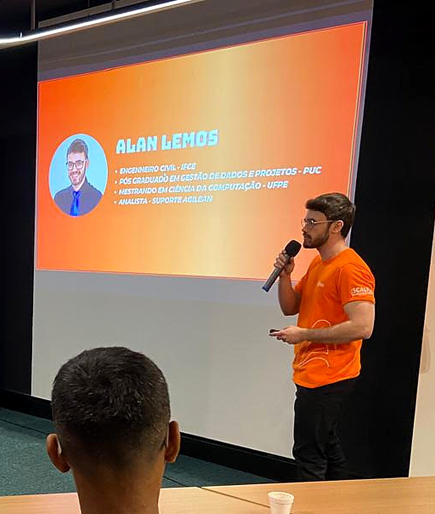

I work across projects, products, data and construction. Choose the role closest to what you need below and download the matching résumé.

I'm a civil engineer with a master's in Computer Science from CIn-UFPE, with research in project management, and a Master Black Belt in Lean Construction. I lead projects and teams from planning to delivery, combining PMBOK, Scrum and Kanban.
Tools MS Project · Jira · ClickUp · Zendesk · Bizagi (BPMN)
I hold a master's in Computer Science from CIn-UFPE. I defined requirements and prioritized features for an AI customer service assistant at a software company, combining business vision with technical execution. I work with agile methods (Scrum and Kanban), use Jira every day and have hands-on discovery experience with real users to support product decisions.
↓ Download detailed résumé (PDF)I hold a postgraduate degree in Data Management and Analysis from PUC-MG. I build indicators and dashboards that guide product and operations decisions, with experience in advanced Excel, programming logic and AI process automation. I also managed planning and quality data in construction projects, which gives me a way of reading data that spans both worlds.
↓ Download detailed résumé (PDF)I'm a civil engineer with a Master Black Belt in Lean Construction and hands-on experience in construction scheduling, budgeting and inspection using MS Project. Today I bring that same planning rigor to technology and product projects.
↓ Download detailed résumé (PDF)